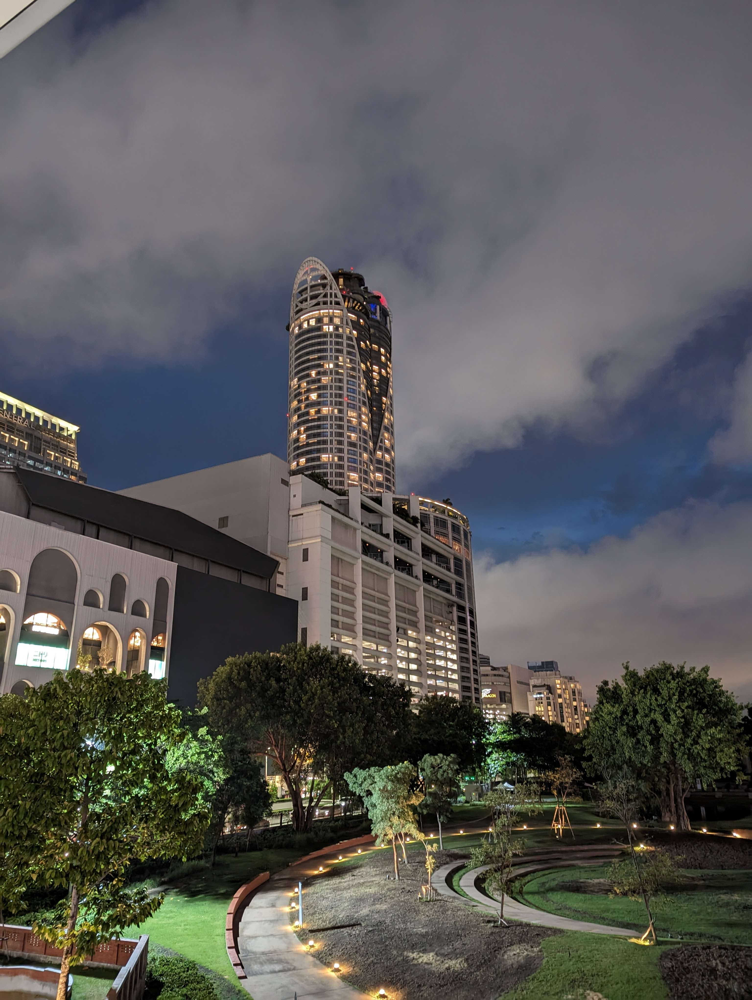
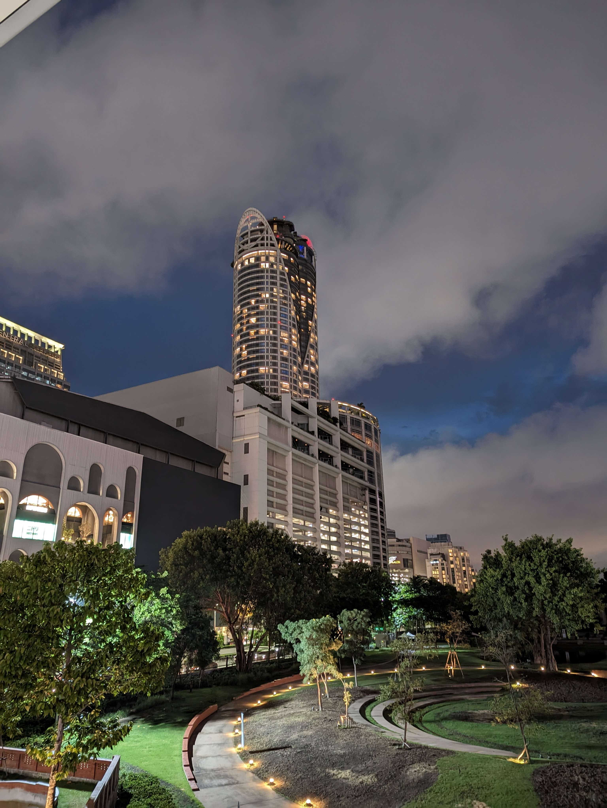
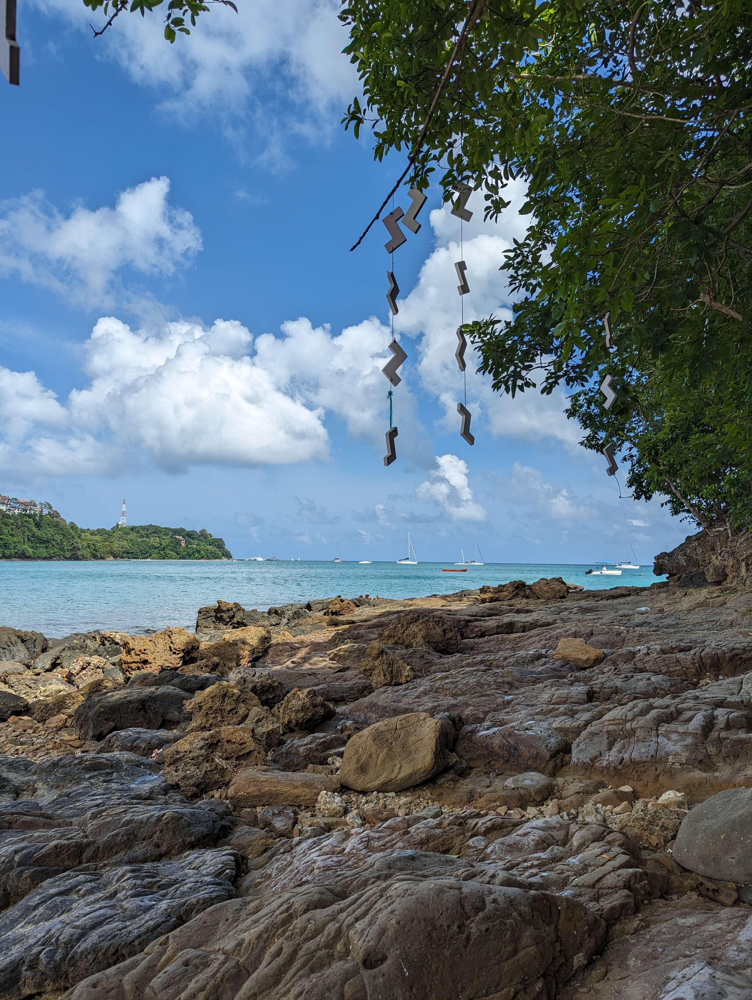
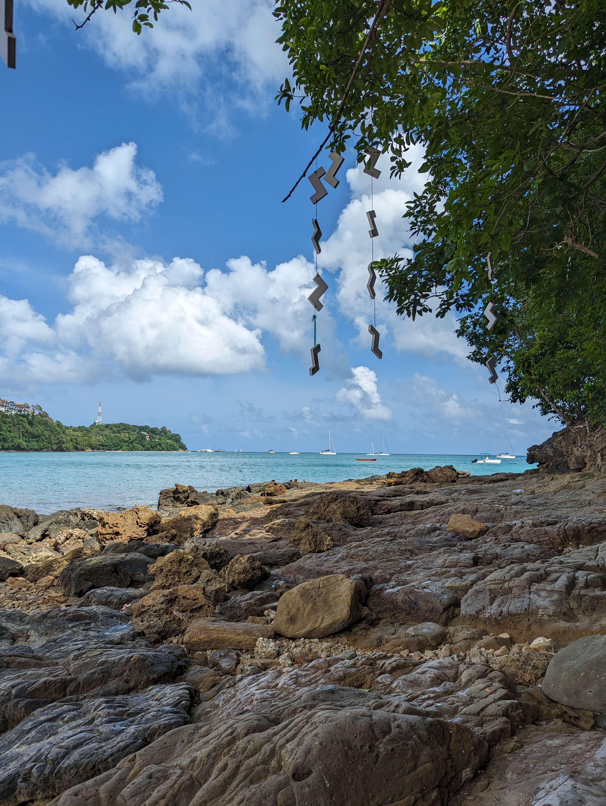

My Travels
Who hasn't loved travelling and discovering new cultures on the other side of the world? I'm one of those people with a taste for adventure and new things. To date, I've had the opportunity to travel to many countries in Europe, Asia and the Middle East. You can find some of the photographs I took during my trip to Thailand on my Instagram account.
My InstagramHere's a list of some of the countries I've visited.

Thailand
Being half Thai, it's only natural that I often visit Thailand, which is the country that has made the biggest impression on me of all my travels. All the more so as these numerous trips have enabled me to learn the Thai language. During my travels there, I've had the opportunity to discover all sorts of landscapes, from the sunny beaches of Phuket to the mountains of Phang Nga Bay, as well as the marvellous temples found throughout the country.
United Arab Emirates
Dubai is a very young country, and you quickly realise this when you land for the first time at Dubai airport, which is one of the largest and most modern in the world. Construction there is on a completely different level to what you'd find at home; everything is bigger: roads, bridges, train stations, buildings... This country is perfect for those who appreciate luxury and modernity.

France
France is not one of the most visited countries in the world for nothing. It has everything: beaches, mountains, fields of flowers, modern and historic cities. I realise how lucky I am to be able to live in France. The Côte d'Azur is a magnificent place, with its many medieval towns and fields as far as the eye can see, with a view of the mountains in the distance. It's really the kind of landscape I never tire of.

Italy
Italy is the second country that has made the biggest impression on me, and I've had the opportunity to visit it on several occasions. Like France, it has a rich culture, with beautiful historic cities and breathtaking landscapes. The city that made the biggest impression on me was undoubtedly Venice, with its canals and narrow streets. Of all the cities I've had the chance to visit, Venice is the most beautiful because it's full of historic monuments and it's unique in that very few cities in the world are built on water.
Picture Gallery
 



 
